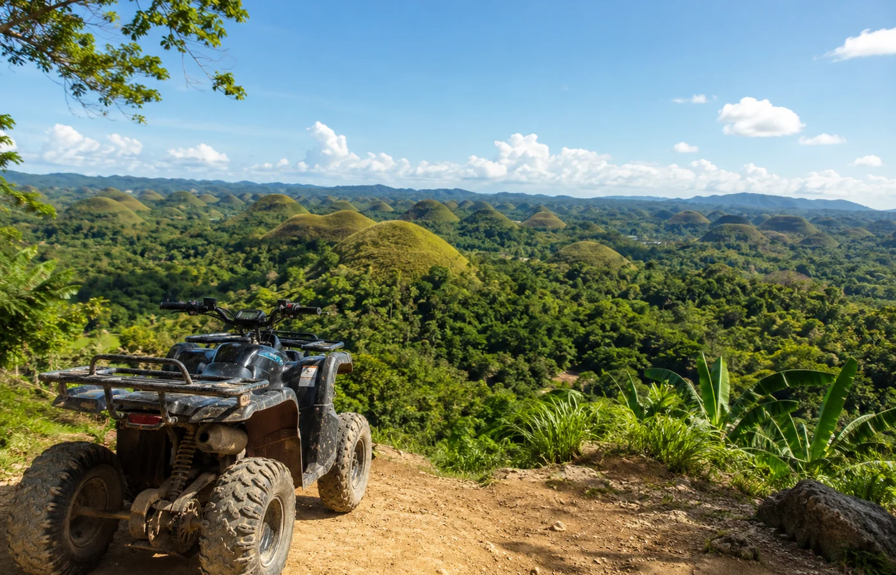

01
Morning viewpoint
Chocolate Hills in Carmen
Start with Bohol's most famous landscape. Add ATV time if you want a more active stop before continuing.
Expect: open views, photos, optional ATV nearby.